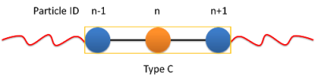

Short range non-bonded interactions
Overview
The net non-bonded force of each particle is produced by summing all the non-bonded forces of neighboring particles on the basis of a neighbor list that lists the interacting particles for each particle, built beforehand. Because of the independence of parallel CUDA threads, a pair of interacting particles is inevitably included independently in neighbor list in the mode that one thread calculates and sums all non-bonded forces of a particle. The common non-bonded potential energy functions are included.
|
|
|
|
Lennard-Jones (LJ) interaction
Description:
\begin{eqnarray*} V_{\mathrm{LJ}}(r) = & 4 \epsilon \left[ \left( \frac{\sigma}{r} \right)^{12} - \alpha \left( \frac{\sigma}{r} \right)^{6} \right] & r < r_{\mathrm{cut}} \\ = & 0 & r \ge r_{\mathrm{cut}} \\ \end{eqnarray*}The following coefficients must be set per unique pair of particle types:
\(\epsilon\) - epsilon (in energy units)
\(\sigma\) - sigma (in distance units)
\(\alpha\) - alpha (unitless)
\(r_{\mathrm{cut}}\) - r_cut (in distance units) - optional: defaults to the global r_cut specified in the pair command
- class LJForce(all_info, nlist, r_cut)
The constructor of LJ interaction calculation object.
- Parameters
all_info (AllInfo) – The system information.
nlist (NeighborList) – The neighbor list.
r_cut (float) – The cut-off radius.
- setParams(string type1, string type2, float epsilon, float sigma, float alpha)
specifies the LJ interaction parameters with type1, type2, epsilon, sigma, and alpha.
- setParams(string type1, string type2, float epsilon, float sigma, float alpha, float r_cut)
specifies the LJ interaction parameters with type1, type2, epsilon, sigma, alpha, and cut-off of radius.
- setEnergy_shift()
calls the function to shift LJ potential to be zero at cut-off point.
- setDispVirialCorr(bool open)
switches the dispersion virial correction.
Example:
lj = gala.LJForce(all_info, neighbor_list, 3.0) lj.setParams('A', 'A', 1.0, 1.0, 1.0) lj.setEnergy_shift() app.add(lj) # Note: adds this object to the application.
Shift Lennard-Jones (LJ) interaction
Description:
\begin{eqnarray*} V_{\mathrm{SLJ}}(r)=&4 \epsilon \left[ \left( \frac{\sigma }{r-\Delta } \right)^{12}-\alpha \left( \frac{\sigma }{r-\Delta } \right)^{6} \right] & r<(r_{\mathrm{cut}}+\Delta ) \\ = & 0 & r \ge (r_{\mathrm{cut}}+\Delta ) \\ \end{eqnarray*}The following coefficients must be set per unique pair of particle types:
\(\epsilon\) - epsilon (in energy units)
\(\sigma\) - sigma (in distance units)
\(\alpha\) - alpha (unitless) - optional: defaults to 1.0
\(\Delta = (d_{i} + d_{j})/2 - \sigma\) - (in distance units); \(d_{i}\) and \(d_{j}\) are the diameter of particle \(i\) and \(j\) which can be input from XML file.
\(r_{\mathrm{cut}}\) - r_cut (in distance units) - optional: defaults to the global r_cut specified in the pair command
- class SLJForce(all_info, nlist, r_cut)
The constructor of shift LJ interaction calculation object.
- Parameters
all_info (AllInfo) – The system information.
nlist (NeighborList) – The neighbor list.
r_cut (float) – The cut-off radius.
- setParams(string type1, string type2, float epsilon, float sigma, float alpha)
specifies the shift LJ interaction parameters with type1, type2, epsilon, sigma, and alpha.
- setParams(string type1, string type2, float epsilon, float sigma, float alpha, float r_cut)
specifies the shift LJ interaction parameters with type1, type 2, epsilon, sigma, alpha, and cut-off of radius.
- setEnergy_shift()
calls the function to shift LJ potential to be zero at the cut-off point.
Example:
slj = gala.SLJForce(all_info, neighbor_list, 3.0) slj.setParams('A', 'A', 1.0, 1.0, 1.0) slj.setEnergy_shift() app.add(slj)
Linear molecule \(\pi\)-\(\pi\) interaction
An attractive potential to mimic \(\pi-\pi\) interactions of rod segments. Reference: Y.-L. Lin, H.-Y. Chang, and Y.-J. Sheng, Macromolecules 2012, 45, 7143-7156.
Description:
\begin{eqnarray*} V_{\mathrm{\pi-\pi}}(r, \theta)=&-\epsilon \cos^{2}\theta (1-r) & r<r_{\mathrm{cut}} \\ = & 0 & r \ge r_{\mathrm{cut}} \\ \end{eqnarray*}
\(\theta\) - (in radians) the angle between two linear molecules
\(r_{\mathrm{cut}}\) - r_cut (in distance units) - optional: defaults to the global r_cut
The following coefficients must be set per unique pair of particle types:
\(\epsilon\) - epsilon (in energy units)
The transitional forces are added between the center particles of linear molcules. A group of the center particles are needed for
CenterForce. The rotational forces are added on the two neighbor particles of a center particle.
{kind=link}
- class CenterForce(all_info, nlist, group, r_cut, epsilon)
The constructor of a pi-pi interaction calculation object for linear molecules.
- Parameters
all_info (AllInfo) – The system information.
nlist (NeighborList) – The neighbor list.
group (ParticleSet) – The group of center particles.
r_cut (float) – The cut-off radius.
epsilon (float) – the depth of the potential well.
- setPreNextShift(int prev, int next)
sets the previous particle and next particle of center particle with shift ID value, the default value is -1 and 1, respectively.
Example:
groupC = gala.ParticleSet(all_info, 'C') cf = gala.CenterForce(all_info,neighbor_list, groupC, 1.0, 2.0) app.add(cf)
Generalized exponential model
Description:
\begin{eqnarray*} \phi(r)=&\epsilon\text{ exp}\left[-\left(\frac{r}{\sigma}\right)^{n}\right] & r<r_{\mathrm{cut}} \\ = & 0 & r \ge r_{\mathrm{cut}} \\ \end{eqnarray*}The following coefficients must be set per unique pair of particle types:
\(\epsilon\) - epsilon (in energy units)
\(\sigma\) - sigma (in distance units)
\(n\) - power exponent n
\(r_{\mathrm{cut}}\) - r_cut (in distance units) - optional: defaults to the global r_cut
- class GEMForce(all_info, nlist, r_cut)
The constructor of a generalized exponential model object.
- Parameters
all_info (AllInfo) – The system information.
nlist (NeighborList) – The neighbor list.
r_cut (float) – The cut-off radius.
- setParams(string type1, string type2, float epsilon, float sigma, float n)
specifies the GEM interaction parameters with type1, type2, epsilon, sigma, and n.
- setParams(string type1, string type2, float epsilon, float sigma, float n, float r_cut)
specifies the GEM interaction parameters with type1, type2, epsilon, sigma, n, and cut-off radius.
Example:
gem = gala.GEMForce(all_info, neighbor_list, 2.0) gem.setParams('A', 'A', 1.0, 1.0, 4.0) # epsilon, sigma, n app.add(gem)
Lennard-Jones and Ewald (short range) interaction
Description:
\begin{eqnarray*} V(r_{ij}) = & 4 \epsilon \left[ \left( \frac{\sigma}{r_{ij}} \right)^{12} - \alpha \left( \frac{\sigma}{r_{ij}} \right)^{6} \right] +\frac{f}{\epsilon_{r}}\frac{{q}_{i}{q}_{j}\mbox{erfc} \left(\kappa{r}_{ij}\right)}{{r}_{ij}} & r < r_{\mathrm{cut}}\\ = & 0 & r \ge r_{\mathrm{cut}} \\ \end{eqnarray*}The following coefficients must be set per unique pair of particle types:
\(\epsilon\) - epsilon (in energy units)
\(\sigma\) - sigma (in distance units)
\(\alpha\) - alpha (unitless)
\(\kappa\) - kappa (unitless)
\(r_{\mathrm{cut}}\) - r_cut (in distance units) - optional: defaults to the global r_cut specified in the pair command
- class LJEwaldForce(all_info, nlist, r_cut)
The constructor of LJ + Ewald in real space interaction calculation object. The \(\kappa\) parameter could be derived automatically.
- Parameters
all_info (AllInfo) – The system information.
nlist (NeighborList) – The neighbor list.
r_cut (float) – The cut-off radius.
- setParams(string type1, string type2, float epsilon, float sigma, float alpha)
specifies the LJ interaction parameters with type1, type2, epsilon, sigma, and alpha.
- setParams(string type1, string type2, float epsilon, float sigma, float alpha, float r_cut)
specifies the LJ interaction parameters with type1, type2, epsilon, sigma, alpha, and cut-off of radius.
- setEnergy_shift()
calls the function to shift LJ potential to be zero at cut-off point.
- setDispVirialCorr(bool open)
switches the dispersion virial correction.
Example:
lj = gala.LJEwaldForce(all_info, neighbor_list, 0.9) lj.setParams('OW', 'OW', 0.648520, 0.315365, 1.0) lj.setParams('HW', 'HW', 0.0, 0.47, 1.0) lj.setParams('MW', 'MW', 0.0, 0.47, 1.0) lj.setParams('OW', 'HW', 0.0, 0.47, 1.0) lj.setParams('OW', 'MW', 0.0, 0.47, 1.0) lj.setParams('HW', 'MW', 0.0, 0.47, 1.0) lj.setEnergy_shift() lj.setDispVirialCorr(True) app.add(lj)
Pair interaction
LJ9_6 interaction
Description:
\begin{eqnarray*} V(r) = & 6.75 \epsilon \left[ \left( \frac{\sigma}{r} \right)^{9} - \alpha \left( \frac{\sigma}{r} \right)^{6} \right] & r < r_{\mathrm{cut}} \\ = & 0 & r \ge r_{\mathrm{cut}} \\ \end{eqnarray*}The following coefficients must be set per unique pair of particle types:
\(\epsilon\) - epsilon (in energy units)
\(\sigma\) - sigma (in distance units)
\(\alpha\) - alpha (unitless)
\(r_{\mathrm{cut}}\) - r_cut (in distance units)
Harmonic repulsion
Description:
\begin{eqnarray*} V_{\mathrm{harmonic}}(r)=&\frac{1}{2}\alpha \left(1-\frac{r}{r_{cut}} \right)^{2} & r < r_{\mathrm{cut}} \\ = & 0 & r \ge r_{\mathrm{cut}} \\ \end{eqnarray*}The following coefficients must be set per unique pair of particle types:
\(\alpha\) - alpha (in energy units)
\(r_{\mathrm{cut}}\) - r_cut (in distance units)
Gaussian repulsion
Description:
\begin{eqnarray*} V_{\mathrm{Gaussion}}(r)=& \epsilon \exp \left[ -\frac{1}{2}{\left( \frac{r}{\sigma} \right)}^{2} \right] & r < r_{\mathrm{cut}} \\ = & 0 & r \ge r_{\mathrm{cut}} \\ \end{eqnarray*}The following coefficients must be set per unique pair of particle types:
\(\epsilon\) - epsilon (in energy units)
\(\sigma\) - sigma (in distance units)
\(r_{\mathrm{cut}}\) - r_cut (in distance units)
IPL potential
Description:
\begin{eqnarray*} V_{\mathrm{IPL}}(r)=&\epsilon \left(\frac{\sigma}{r} \right)^{n} & r < r_{\mathrm{cut}} \\ = & 0 & r \ge r_{\mathrm{cut}} \\ \end{eqnarray*}The following coefficients must be set per unique pair of particle types:
\(\epsilon\) - epsilon (in energy units)
\(\sigma\) - sigma (in distance units)
\(n\) - n (unitless)
\(r_{\mathrm{cut}}\) - r_cut (in distance units)
Short-range Coulomb potential
Description:
\begin{eqnarray*} U\left( r \right)=&\frac{\alpha}{r} & r < r_{\mathrm{cut}} \\ = & 0 & r \ge r_{\mathrm{cut}} \\ \end{eqnarray*}The following coefficients must be set per unique pair of particle types:
\(\alpha = f\frac{q_{i} q_{j}}{\epsilon_{r}}\) - alpha - (in energy*distance unit): \(f= 1/4\pi \epsilon_0=138.935\text{ }kJ\text{ }mol^{-1}\text{ }nm\text{ }e^{-2}\)
\(r_{\mathrm{cut}}\) - r_cut (in distance units)
Script commands
- class PairForce(all_info, nlist)
The constructor of pair interaction calculation object.
- Parameters
all_info (AllInfo) – The system information.
nlist (NeighborList) – The neighbor list.
- setParams(string type1, string type2, float param0, float param1, float param2, float r_cut, PairFunc function)
specifies the interaction and its parameters with type1, type2, parameter0, parameter1, parameter2, cut-off radius, and potential type.
- setShiftParams(string type1, string type2, float param0, float param1, float param2, float r_cut, float r_shift, PairFunc function)
specifies the interaction and its parameters with type1, type2, parameter0, parameter1, parameter2, cut-off radius, shift radius, and potential type. This method employs a shift function introduced by GROMACS by which potential and force are smoothed at the boundaries.
Function types
Parameter0
Parameter1
Parameter2
lj12_6
epsilon
sigma
alpha
lj9_6
epsilon
sigma
alpha
harmonic
alpha
gauss
epsilon
sigma
ipl
epsilon
sigma
n
Coulomb
alpha
Example:
pair = gala.PairForce(all_info, neighbor_list) pair.setParams('A', 'A', 100.0, 0.0, 0.0, 1.0, gala.PairFunc.harmonic) pair.setParams('A', 'B', 10.0, 1.0, 0.0, 1.0, gala.PairFunc.gauss) pair.setParams('B', 'B', 10.0, 1.0, 2, 1.0, gala.PairFunc.ipl) app.add(pair)